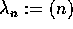
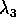
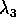
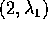
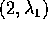
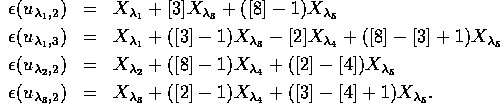

As examples we will treat the  -group algebras
of symmetric groups.
Here the standard modules are known to be the
Specht modules ([GL], 5.7,
see [JK], chapter 7 for details on Specht-modules). The reader
not familiar with cellular algebras may check imediately that the
conditions stated in the begining of section 5
can be realised using this modules.
They are labelled by the set
of partitions of n and are defined as
submodules of permutation modules on the cosets of parabolic
subgroups corresponding to the partition
-group algebras
of symmetric groups.
Here the standard modules are known to be the
Specht modules ([GL], 5.7,
see [JK], chapter 7 for details on Specht-modules). The reader
not familiar with cellular algebras may check imediately that the
conditions stated in the begining of section 5
can be realised using this modules.
They are labelled by the set
of partitions of n and are defined as
submodules of permutation modules on the cosets of parabolic
subgroups corresponding to the partition  .
As first example, let us look at .
Then
is the permutation representation on the cosets of the copy of in
fixing the last element n. As a
.
As first example, let us look at .
Then
is the permutation representation on the cosets of the copy of in
fixing the last element n. As a  -module this is free
of rank n with basis , say. The operation of
from the right is given by .
The Specht module is the free
-module this is free
of rank n with basis , say. The operation of
from the right is given by .
The Specht module is the free  -submodule with
basis for .
-submodule with
basis for .
The symmetric bilinear form is
given by restriction of the canonical bilinear form on
(given by the unit matrix) to . Thus the Gram matrix
of is nothing but the Cartan matrix
corresponding to the Dynkin diagram of type .
This in turn is just the coefficient matrix of
with respect to the basis
on and the corresponding dual basis on
. The image of  is consequently
the span of the columns of this matrix and is easily calculated to be
the span of and for . Therefore - the cokernel of
is consequently
the span of the columns of this matrix and is easily calculated to be
the span of and for . Therefore - the cokernel of  - is generated
by and is obviously isomorphic to as a
- is generated
by and is obviously isomorphic to as a  -module.
-module.
Let us show that the operation of on is
trivial. We only need to check this for the long cycle
or its inverse and .
On the operation
is given by
 and for i>1
in the case of
and for i>1
in the case of  whereas we have and for all i>2. Transposing the
corresponding coefficient matrices we get . Since is congruent to modulo
the image of
whereas we have and for all i>2. Transposing the
corresponding coefficient matrices we get . Since is congruent to modulo
the image of  we are done.
we are done.
The Specht module of the partition  is just the one-dimensional
trivial representation with bilinear form being
given by the trivial Gram matrix. Therefore
 holds in
holds in
 . Moreover, we have shown the following equation in
. Moreover, we have shown the following equation in
 :
:

In the case of the
symmetric group there are three partitions
and . The
corresponding Specht modules are free  -modules
of rank 1, 2 and 1, respectively. The cases and
 have been treated in general above. The Specht module
is the sign representation and . Therefore we have . From the ordinary decomposition matrices
of for the primes 2 and 3 we get
and
leading to the
global decomposition matrix of :
-modules
of rank 1, 2 and 1, respectively. The cases and
 have been treated in general above. The Specht module
is the sign representation and . Therefore we have . From the ordinary decomposition matrices
of for the primes 2 and 3 we get
and
leading to the
global decomposition matrix of :
Note that the corresponding equations according to condition (c)
of Proposition 5.6 even hold in  . This will not
be true in the next example
. This will not
be true in the next example  as well as the fact that the
global decomposition matrix can entirely be constructed from
the knowledge of the ordinary decomposition matrices for the primes
2 and 3. On the other hand, the
ordinary decomposition numbers are detected from the
above by multiplying the whole table by [2] resp. [3] and then
setting [2]=1 resp. [3]=1.
as well as the fact that the
global decomposition matrix can entirely be constructed from
the knowledge of the ordinary decomposition matrices for the primes
2 and 3. On the other hand, the
ordinary decomposition numbers are detected from the
above by multiplying the whole table by [2] resp. [3] and then
setting [2]=1 resp. [3]=1.
Before proceeding to the next example let us write down all the
relations between the  with the help of
Proposition 5.8.
We have to consider two pairs such that
with the help of
Proposition 5.8.
We have to consider two pairs such that  . These are  and . We calculate
and
. This gives
and
leading to the following complete set of relations for and
:
. These are  and . We calculate
and
. This gives
and
leading to the following complete set of relations for and
:
Turning to  we have 5 partitions
and . Let us first picture
the global decomposition matrix and then comment it:
we have 5 partitions
and . Let us first picture
the global decomposition matrix and then comment it:
First note that the entries [8] and [4] cannot be reconstructed from
the knowledge of the ordinary decomposition matrices of  .
As in the preceeding example the first row follows easily
from and the knowledge
of
.
As in the preceeding example the first row follows easily
from and the knowledge
of  and
. Note that
does not hold in
and
. Note that
does not hold in
 but surely in .
In contrast, the equations corresponding to
the rows 3,4,5 hold in
but surely in .
In contrast, the equations corresponding to
the rows 3,4,5 hold in  the last two of which have
been treated in the beginning of this chapter.
We leave the calculation of as an exercise and turn to the
most interesting case .
the last two of which have
been treated in the beginning of this chapter.
We leave the calculation of as an exercise and turn to the
most interesting case .
Here the Specht module is a free  -module of rank three with basis
, say. The long cycle and
operate from right by and . The
Gram matrix of the bilinear form is given by
-module of rank three with basis
, say. The long cycle and
operate from right by and . The
Gram matrix of the bilinear form is given by
and therefore the image of  is spanned by
and . Clearly, is isomorphic
to [8]+[8]+[2] as a
is spanned by
and . Clearly, is isomorphic
to [8]+[8]+[2] as a  -module. But anyway, as an A-module
it is irreducible by
-module. But anyway, as an A-module
it is irreducible by  -sums as defined in chapter 2. Therefore it cannot be splitted in
-sums as defined in chapter 2. Therefore it cannot be splitted in  anymore.
But we can calculate in as in the proof of Lemma
5.1. From the ordinary decomposition matrix for the
prime 2, we get
and by dimension arguments the 2-residual series must be
anymore.
But we can calculate in as in the proof of Lemma
5.1. From the ordinary decomposition matrix for the
prime 2, we get
and by dimension arguments the 2-residual series must be
which completes the verification. In order to determine the relations
among the  one calculates
one calculates

As in the case of a complete set of relations can be
obtained from these formulas with help of Proposition 5.8.
Problems: